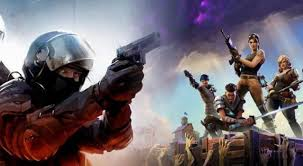
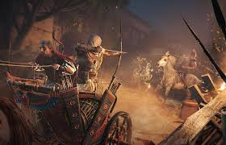

#Aktuell: CS-GO und Fortnite - Gif zeigt mögliche Kombination der beiden Spiele
Durch das Konstruieren von Rampen und Plattformen dürften sich jedenfalls ganz neue strategische Möglichkeiten ergeben. In den Kommentaren auf Reddit kam der Post recht gut an. Spielbar wird die Idee aber wohl nicht. Kinsi55 erklärt, dass die Mod nicht wirklich funktionieren würde, selbst wenn er sie veröffentlicht. Die Karten seien nicht darauf ausgerichtet. Das hinge mit der relativ niedrigen Skybox der meisten Maps zusammen. Die gezeigte Inferno-Karte sei eine Ausnahme. Andere Schauplätze seien extrem beschränkt, weshalb man mit solchen Möglichkeiten leicht stecken bliebe. Es wäre ihm zufolge das reinste Chaos. Die Nutzer ermuntern den Modder trotzdem in den Kommentaren und schlagen ihm vor, eine eigene Map für das Fortnite-Gameplay zu erstellen. Vielleicht kommen wir in Zukunft also trotzdem noch in Genuss einer Mischung aus beiden Spielen.
#Last-Month: Update könnte ein New-Game-Plus-Modus den Weg in die Spielwelt von Assassin's Creed Origins
Mit einem nächsten Update könnte ein New-Game-Plus-Modus den Weg in die Spielwelt von Assassin's Creed Origins finden. Damit könnten Spieler die Story des Action-Rollenspiels erneut erleben, ohne das erspielte Level von Held Bayek zurücksetzen zu müssen. Konkrete Infos liegen zwar noch nicht vor. Ein erstes Info-Häppchen wurde jüngst allerdings von einem Community-Manager auf Reddit gepostet. Noch bleibt abzuwarten, zu welchem Zeitpunkt es New Game+ für Assassin's Creed Origins tatsächlich gibt. Eines der kommenden Assassin's Creed Origins Updates könnte einen New-Game-Plus-Modus mitbringen, das geht aus einem aktuellen Reddit-Beitrag hervor. Mit einem New-Game-Plus-Modus könnten Spieler von Assassin's Creed Origins die Story erneut erleben, ohne das im ersten Durchgang erreichte Level von Bayek zurücksetzen zu müssen. Auch die erhaltenen Waffen blieben erhalten.